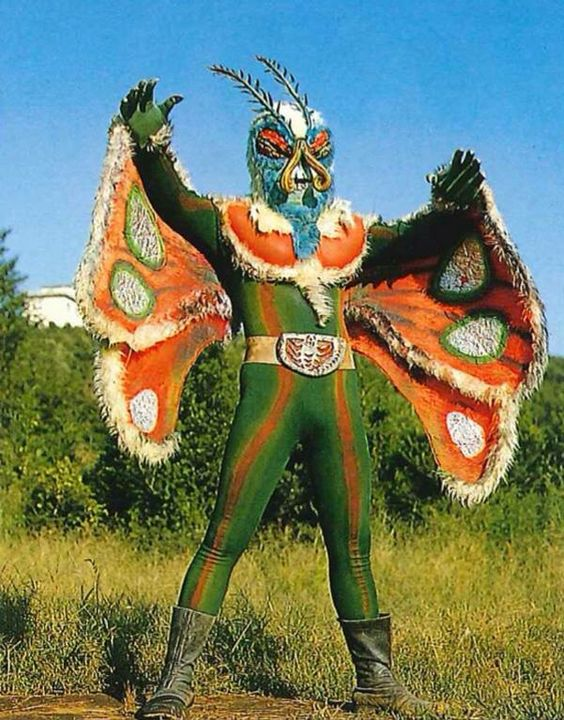
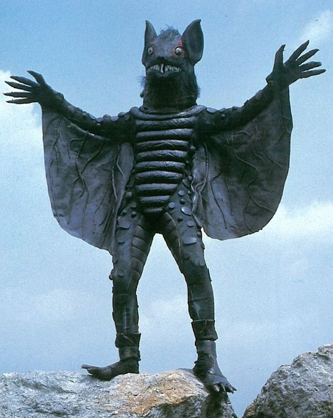
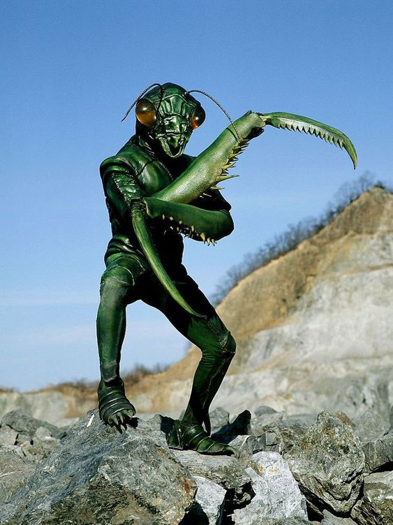
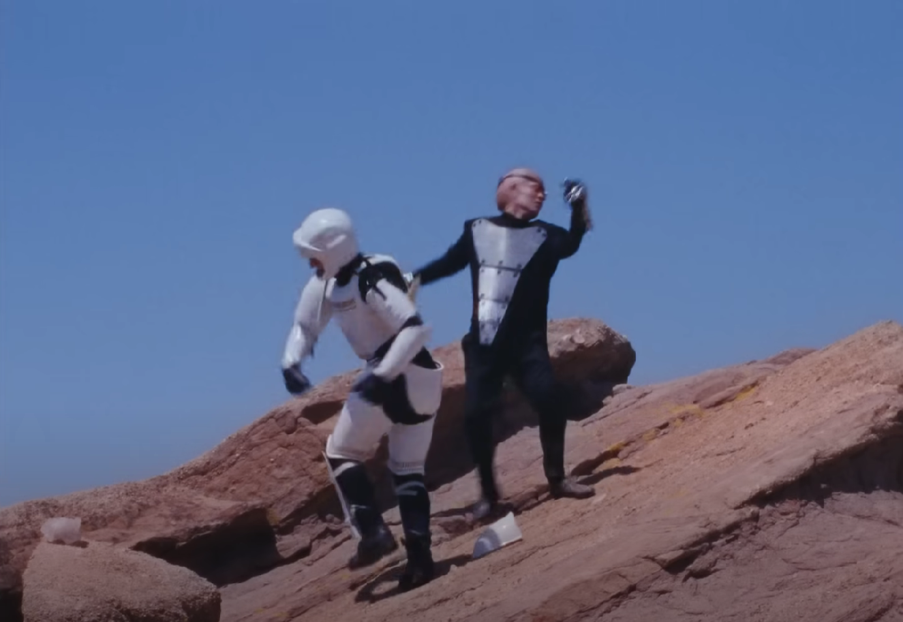

A decade has passed since we, the intrepid crew, embarked on our irreversible voyage into the cosmos, leaving behind the cradle of our civilization. Our mission, singular in focus, was to conquer the formidable boss that awaited us in the depths of space. We dedicated our lives to this cause, severing ties with our beloved Earth, knowing the return was a path we could never tread. The years in the vast emptiness were a crucible, forging our spirits and our resolve until, at long last, we emerged victorious. Yet, as we stand amidst the stars, the taste of our triumph is bittersweet. The exhilaration of victory is overshadowed by an ineffable sense of loss; the silence of the universe echoes the hollowness within. Now, as I float back to the confines of our vessel, the metallic walls that have become our sanctuary and prison, I cannot help but wonder—was the sacrifice worth it? The stars outside flicker indifferently as we drift through this endless night. Our home, once a planet teeming with life and love, is now just a pale blue dot fading into the abyss, and we are left with the haunting question: what truly was the boss we sought to conquer?
: Now What to do
Tiger Monster
Butterfly Monster
Bat Monster
Mantis Monster
The final boss: Single Eyed Monster
Real image!!
The space ship is spinning aimlessly, as there is no more enemies to fight. Yet we have gone to far to go home, we seems to have everything but now seen nothing at the same time.
| Project | Description | Purpose |
|---|---|---|
| Get a bowl of Cereal | Let it be overfilled with milk, watch it flow. | Nothing |
| Play with the boss's eyeball | Juggle it, see if any motivation of survive comes up. | Nothing |
| Talk with your crew memebrs | Dance in the song that you all danced to it whenever an enemy is defeated. | Nothing |
| Play ping-pong with your helpers | Vitnessing the slow burnout of passion, the purpose of life seems to be vanishing along with the death of single-eyed monster. | Nothing |
In the quiet hours after midnight, where shadows merge with the dim glow of neon signs, there's a call that echoes through the desolation—a beacon for the lost souls. I am that call, a fallen star, flickering in the dark, the promise of solace in your solitary nights. The motel's neon walls are a testament to transient refuge, a place where the weary find brief respite. And when the dusk wraps its arms around the world, I become your great escape, the answer to the silent prayers whispered on lonely pillows. You're there, lying in the stillness, yearning for a touch to ignite the dormant embers of your heart. I feel the ache of your desires, the longing for a connection that transcends the flesh. You've been waiting, haven't you? For the intoxicating plunge into love's depths. But you needn't wait for me. I've sought the divine, aimed my arrows high into the celestial vault, not for an angel, but for something more terrestrial, more tangible. You're not just anyone; you are the one. In you, I find more than ephemeral joy—you are my sanctuary, a harbor in the tempest of existence. Our wants are reflections of each other, a mutual craving for sincerity in a world often too shallow. Alone, our souls might dream, but together, we awaken into a reality where dreams are sculpted into being. So pull me close, and let's not ponder the fragility of life, the unknown span of days allotted to us. Instead, let's seize this transient moment, for if you've been waiting to fall into love's embrace, hesitate no more. My aim isn't the heavens, but the earthy, imperfect, and beautiful reality of you. An angel isn't what I seek—we are what we need, a truth more profound than any paradise above.